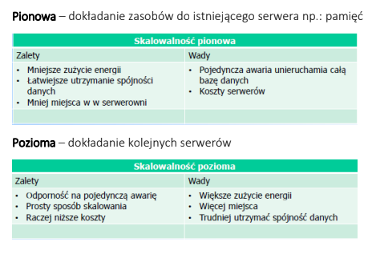
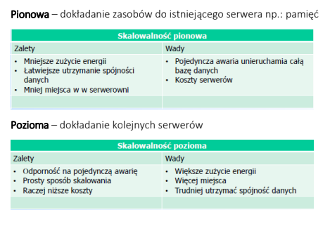

Podstawy baz danych (wykłady, semester 2)
Prowadzący: dr inż. Zbigniew Lutowski
DDL – Data Definition Language
DML – Data Manipulation Language
DCL – Data Control Language
TCL – Transaction Control Language
DML – Data Manipulation Language
DCL – Data Control Language
TCL – Transaction Control Language

Współdzielenie danych
Korzystanie z danych przez więcej niż jednego klienta – współbieżność dostępu do danych.
Korzystanie z danych przez więcej niż jednego klienta – współbieżność dostępu do danych.
Integracja danych
Wszystkie dane przechowywane w jednym miejscu, unikanie nadmiarowości danych, ułatwiona administracja danymi, ułatwione uzyskiwanie informacji wymagających łączenia ze sobą różnych zbiorów danych
Wszystkie dane przechowywane w jednym miejscu, unikanie nadmiarowości danych, ułatwiona administracja danymi, ułatwione uzyskiwanie informacji wymagających łączenia ze sobą różnych zbiorów danych
Integralność (spójność) danych
Zachowanie prawidłowych związków pomiędzy danymi mimo ich nieustannej aktualizacji
Zachowanie prawidłowych związków pomiędzy danymi mimo ich nieustannej aktualizacji
Bezpieczeństwo danych
Ograniczenie dostępu do danych osobom nieuprawnionym, scentralizowany dostęp do danych umożliwia zastosowanie własnych mechanizmów kontroli dostępu do danych
Ograniczenie dostępu do danych osobom nieuprawnionym, scentralizowany dostęp do danych umożliwia zastosowanie własnych mechanizmów kontroli dostępu do danych
Abstrakcja i niezależność danych
Ukrycie wewnętrznej organizacji bazy danych przed użytkownikami – programami użytkowymi, zmiana wewnętrznej organizacji b.d. nie powoduje konieczności zmian w programach użytkowych
Ukrycie wewnętrznej organizacji bazy danych przed użytkownikami – programami użytkowymi, zmiana wewnętrznej organizacji b.d. nie powoduje konieczności zmian w programach użytkowych
Dwie architektury
Architektura klient – serwer
Zapytania nie mogą być inicjowane ze strony serwera; wszystko musi być inicjowane przez
klienta.
Architektura 3-warstwowa: sieć – serwer aplikacji – serwer bazodanowy
Serwer aplikacji komunikuje się z serwerem bazodanowym.
Dwa rodzaje skalowalności


Klucz ---> wartość
Redis, Memcached, DynamoDB od AWS
Redis, Memcached, DynamoDB od AWS
Systemy kolumnowe
Cassandra, Hadoop
Cassandra, Hadoop
Systemy dokumentowe
MongoDB
MongoDB
Oparte na grafach
neo4j -> Cypher Query Language [more like ciekawostka]
neo4j -> Cypher Query Language [more like ciekawostka]